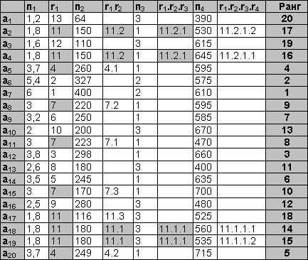
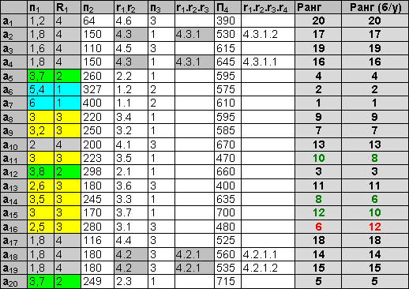
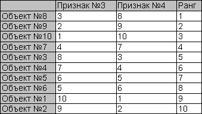

| |
| Главная · Последний выпуск · Архив · Авторы · О журнале · Исходники.RU | |
Многомерная сортировка объектов. Сортировка с уступкойАвтор: vkРассматривается классическая векторная (многомерная) сортировка объектов в пространстве разноприоритетных признаков, в том числе сортировка с уступкой в пользу признака с некорректным приоритетом. Обсуждаются проблемы классического подхода. Предлагается модифицированный алгоритм векторной сортировки и его простая программная реализация. Введение. Простейшим случаем упорядочения объектов с целью выбора наилучшего является сортировка по некоторому признаку, общему для всех объектов. К сожалению, в реальных задачах зачастую присутствует не один, а множество признаков, каждый из которых следует учитывать при сортировке. Пусть имеется множество объектов X={x1,…xi,…xn}, характеризующихся множеством признаков Y={y1,…yj,…ym}, измеренных в порядковой или более сильной шкале. Пусть для каждого признака можно указать направление оптимизации: максимизация (чем больше, тем лучше) или минимизация (чем меньше, тем лучше). Пусть также имеется возможность строго упорядочить признаки по значимости от самого приоритетного до наименее приоритетного. Если задача удовлетворяет всем перечисленным требованиям, может быть применен метод векторной сортировки. Алгоритм векторной сортировкиКлассический алгоритм векторной сортировки заключается в последовательном переборе признаков, начиная с самого приоритетного и заканчивая наименее приоритетным.
Таблица 1. Многомерная сортировка без уступки
 аi – автомобиль, пj – одна из четырех ходовых характеристик (объем двигателя, мощность, привод, грузоподъемность). Направления оптимизации всех признаков – максимизация. Пусть приоритеты признаков следующие: объем двигателя (п1) – 1, мощность (п2) – 2, привод (п3) – 2, грузоподъемность (п4) – 4. Табл. 1 иллюстрирует пошаговое применение алгоритма многомерной сортировки. На первом шаге осуществляется сортировка по признаку п1 (объем двигателя). Полученные ранги показаны в столбце r1. Несколько объектов получили уникальные ранги, но общая сортировка нестрогая. Неразличимые на первом шаге ранги выделены, они бдут детализированы далее. На втором шаге (сортировка по приводу) уникальные ранги получают ранее неразличимые объекты a20 и a5, а четыре объекта, получившие на первом шаге 11 ранг, разделяются на две группы неразличимых объектов. Сортировка по признаку п3 (привод) не вносит в ранжировку никаких изменений. Окончательная строгая сортировка получается только на последнем шаге. Для удобства рассмотрения алгоритма в примере ранги объектов на каждом шаге не пересчитываются, а детализируются дополнительным рангом (через точку). Пересчет рангов в привычную шкалу производится после окончания работы алгоритма. Таблица 2. Многомерная сортировка с уступкой
 Пусть в пользу признака «Мощность» (п2, второй по приоритету) осуществляется уступка в 25% от шкалы предыдущего признака (объем двигателя, п1). Это означает, что значения признака п1, отличающиеся менее чем на 25% от шкалы [25%(6-1.2)=1.2], будут считаться равными. За счет этого применение многомерной сортировки даст другие результаты. Классический вариант использования уступки предполагает отсчет от экстремальных значений. Шкала признака разбивается на d=100/x% интервалов длиной в значение уступки dx=x%(max-min). Объекты, попавшие в интервал [max-dx,max], получают ранг 1, объекты, попавшие в [max-2*dx,max-dx] – ранг 2, и т.д, до объектов, попавших в [min,min+dx] и получивших ранг d. В примере шкала признака п1 разбита на 4 интервала, значения, принадлежащие одному интервалу, покрашены одним цветом, а соответствующие объекты получили одинаковый ранг. Далее многомерная сортировка идет обычным способом. Для наглядности помимо ранжировки объектов с уступкой в таблице приведена и обычная ранжировка, в отсутствие уступки. Видно, что часть объектов изменила свой ранг. Проблемы классического подхода. Модифицированный алгоритмКлассический вариант многомерной сортировки реализуется рекурсивной функцией, на каждом уровне рекурсии сортируется множество объектов, получивших одинаковый ранг на предыдущем уровне. Такой способ хорош тем, что алгоритм реализуется буквально – осуществляется перебор признаков и анализ всего множества объектов на каждом шаге. Недостатки такого способа реализации – в неоправданном применении рекурсии и большом числе сравнений. Кроме того, можно выделить ещё один недостаток на уровне алгоритма. В процессе сортировки объектов по уступающему признаку возникает ситуация, аналогичная парадоксу «Лысый». В самом деле (см. пример 1, табл. 2), как невозможно определить точное количество волосков, которые нужно приобрести, чтобы перестать быть лысым, так и неправомерно говорить, что объект а5 (объем=3.7) получает второе место, а объект а14 – уже третье (объем=3,5). Эти два объекта отличаются по признаку п1 менее, чем на 1,2, но из-за жесткого разделения шкалы на интервалы они попали в разные группы. Предлагается следующая модификация алгоритма векторной сортировки
Анализ модифицированного алгоритмаМодифицированный алгоритм обладает следующими преимуществами: Недостаток: Суть отличия модифицированного алгоритма векторной сортировки от классического в том, что классический вариант перебирает признаки, сравнивая объекты на кажом шаге, а модифицированный – перебирает объекты, сравнивая вектора признаков каждой пары. Что касается многомерной сортировки без уступки, результаты будут совпадать с результатами классического алгоритма при любых распределениях значений признаков. В самом деле, предикат сравнения двух объектов всегда сначала обращается к значениям наиболее приоритетного признака. Если объект лучше другого по наиболее приоритетному признаку, то он получит более высокий ранг при использовании обоих алгоритмов. Если объекты равны по наиболее приоритетному признаку, то и в том, и в другом алгоритме, произойдет переход к следующему по приоритету признаку. Но результаты применения уступки для классического и модифицированного алгоритма, разумеется, будут различаться за счет обхода парадокса «Лысый» путем попарного сравнения векторов признаков двух объектов вместо разбиения шкалы признака на интервалы,. Более того, результаты работы модифицированного алгоритма сортировки с уступкой будут зависеть от распределения значений уступающего признака. Ниже приводится иллюстрация крайнего, наиболее неблагоприятного случая применения модифицированного алгоритма многомерной сортировки с уступкой: Таблица 3. Уступка при сильно упорядоченных исходных данных.
Пусть значения обоих признаков минимизируются. Приоритет Признака №1 – 1, Признака №2 – 2. Используется уступка в пользу Признака №2. Её значение – 20%, этого достаточно для того, чтобы не различать два соседних значения Признака №1. Значения наиболее приоритетного признака (№1) в примере распределены так, что каждые два соседних объекта считаются равными. Сравнение 1го и 2го объектов, например, выявит их равенство по Признаку№1 и преимущество 1го по Признаку№2. В результате сравнения 2го и 3го объекта 3ий окажется хуже. Таким образом, после первого же прохода будет сделан вывод о том, что объекты изначально упорядочены, строго проранжированы, и алгоритм завершится. Таблица 4. Уступка при слабо упорядоченных исходных данных
 Результаты сортировки в слабоупорядоченной таблице более удовлетворительны. 1й объект получил предпоследнее место, 10й, лучший по Признаку №1, сместился на 3-е место за счет худшего значения по Признаку №2. Заключение.
Приложение. Пример программной реализации(С++, STL)
Приводится один из возможных вариантов программной реализации модифицированного алгоритма векторной сортировки (в том числе с уступкой). Детали и окружение опущены.
// Характеристика объекта – вектор значений признаков
typedef std::vector<double> VectorForPriority;
...
// Предикат сравнения векторов вещественных чисел. Истинен, если f хуже(меньше) s
class Less: std::binary_function<const VectorForPriority&, const VectorForPriority&, bool>
{
private:
int un; // приоритет признака, в пользу которого делается уступка
double uv; // значение уступки
public:
Less (){};
Less (int Un,double Uv):un(Un),uv(Uv){};
// Суть алгоритма векторной сортировки
bool operator()(const VectorForPriority& f, const VectorForPriority& s)
{
int sz=(int)f.size()-1; // определение количества значимых признаков
double delta; // заданная точность сравнения
for (int i=0; i<sz; i++)
{
delta=(un==i)?uv:MIN; // вычисление точности сравнения. Это либо
// минимальное системное вещественное число, либо значение уступки
// значения сравниваются либо до окончания векторов, либо до выявления
// преимущества одного вектора над другим
if (fabs(s[i]-f[i])>delta) return f[i]<s[i];
}
return false; // равенство векторов тоже делает предикат ложным
}
};
...
// Метод сортировки. Concess – значение уступки (дается извне)
void VectorSort(double Concess)
{
// 1. Формирование вектора характеристик, подготовленных для сортировки.
// в каждом элементе вектора хранятся значения признаков объекта
// упорядоченные по приоритету признаков (значимости)
std::vector<VectorForPriority> v_Objects;
// Вектор номеров (можно также имен, указателей и т.д.) признаков,
// упорядоченных в соответствии с приоритетами
std::vector<int> Atrs;
// Метод определения номера (имени, указателя) зависит от структуры
// окружения и к алгоритму не относится
for (int j=0; j<atr; j++) Atrs.push_back(GetAtrOfPriority(j));
for (int i=0; i<obj; i++) // оbj – число объектов задачи
{
VectorForPriority v_Object;
for (int j=0; j<atr; j++) // atr – число значимых признаков
{
// Получение значения признака объекта
double vl=GetValue(i,Atrs[j]);
// Получение направления оптимизации
long dir=GetDirection(j);
// Значения записываются с учетом направления оптимизации
// таким образом, чтобы при упорядочении использовать только максимизацию
v_Object.push_back((dir==MAXIMIZATION?-1:1)*vl);
}
// реальный номер объекта (имя, указатель) хранится в векторе характеристик
// в последней ячейке, чтобы после сортировки было возможным определить,
// какой именно объект занял некоторое место
v_Object.push_back(i);
v_Objects.push_back(v_Object);
}
// 2. Сортировка с помощью СТЛ-алгоритма и предиката сравнения,
// реализующего метод приоритетов. m_ConcessAttr – приоритет признака, в пользу
// которого уступка. Уступка 0 и меньше считается отсутствием уступки.
std::sort(v_Objects.begin(),v_Objects.end(),Less(Concess»0 ? m_ConcessAttr-1: -1,Concess);
// 3. Расстановка рангов в соответствии с сортировкой, причем для
// одинаковых векторов выставляются одинаковые ранги.
// "одинаковость" определяется тем же предикатом сравнения для векторов.
int place=1;
for (int i=0; i<obj-1; i++)
{
// Реальный номер (имя, указатель) объекта хранится в последней
// ячейке вектора-характеристики
SetRang(v_Objects[i][atr], place); // назначение ранга
// Увеличение текущего ранга, если соседние объекты различны
// с точки зрения алгоритма
if (Less(Concess>0?m_ConcessAttr-1:-1,Concess)
(v_Objects[i],v_Objects[i+1])) place++;
}
// последний объект не с чем сравнивать
SetRang(v_Objects[obj-1][atr],place);
}
...
С уважением, vk! |
| Журнал "Исходники.RU". Copyright (c) 2006 by Исходники.RU. Designed by Mastilior, Made up by ...:::Alex:::.... |